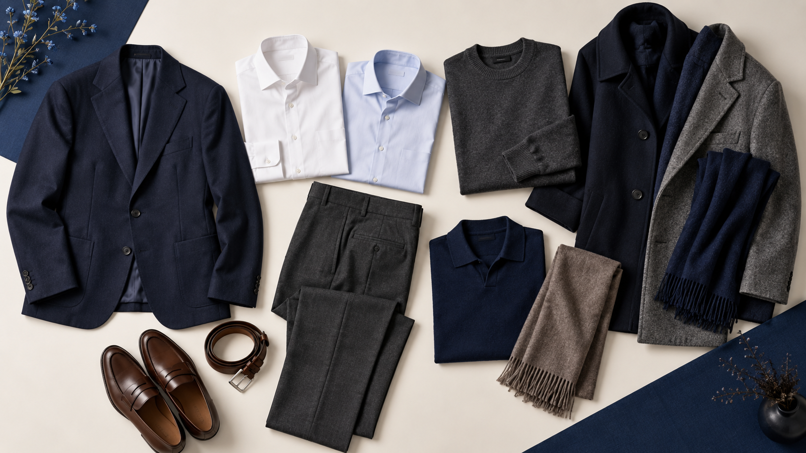

M
월간 셋업
남성·여성 세미정장 · 서울/성남 기후 기준
September 2026 — December 2027
매일 고민 없이,
단정하게.
요일마다 꺼내 입기만 하면 되는 월간 코디 캘린더. 편안한 소프트 테일러링과 계절에 맞는 레이어링으로 구성했습니다.

각 16개월 · 112가지 조합
Monthly wardrobe
이번 달 옷장
남성
여성
2026
2027
체감 온도 가이드
이달의 팔레트
이달의 핵심 8벌
트렌드 적용법
이달 코디 인쇄하기